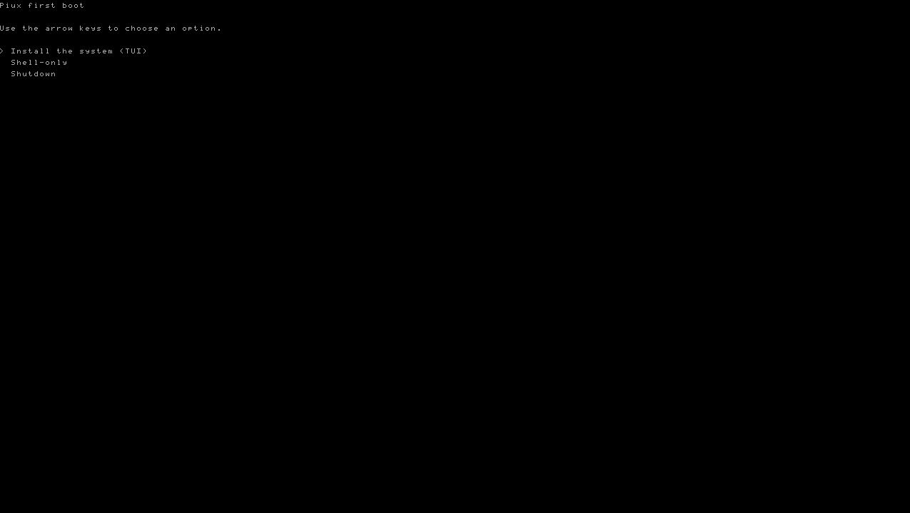
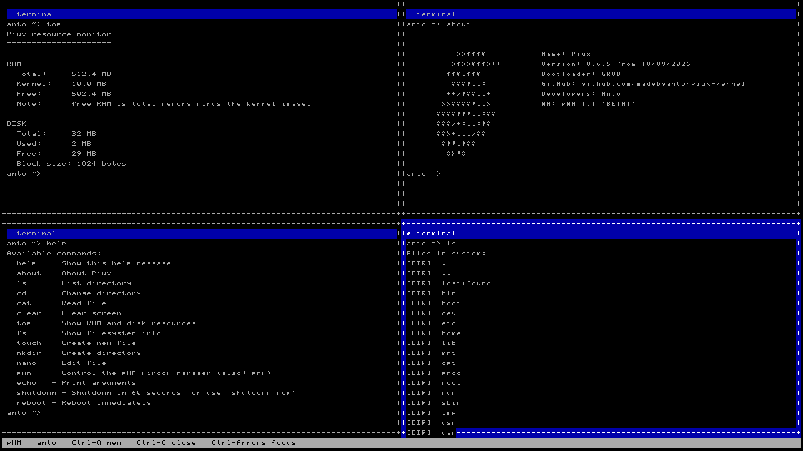
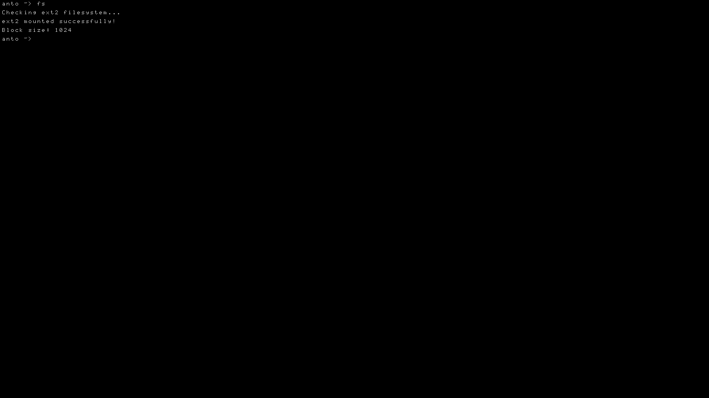
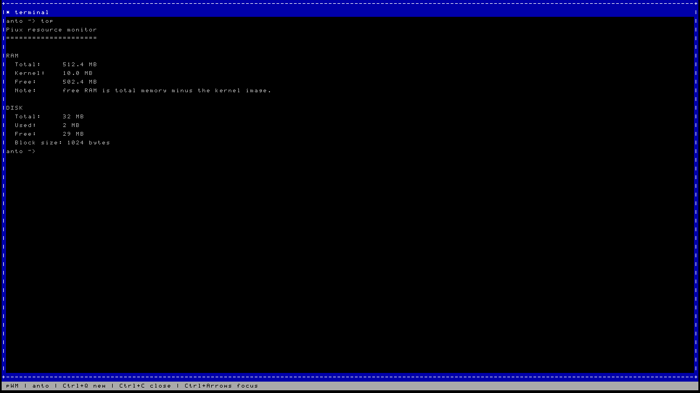
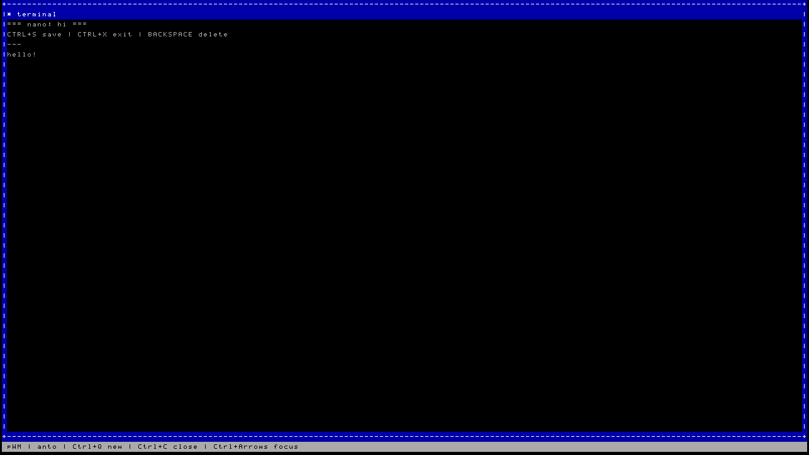

Piux is a small, experimental i386 kernel and OS environment bootable via GRUB Multiboot1. Written in NASM and freestanding C, it includes a framebuffer GUI, tiled window manager, ext2 filesystem, and user authentication — all in the open.
Piux is a small 32-bit x86 experimental OS and kernel environment bootable
with GRUB Multiboot1. It is built with NASM, freestanding C, GNU ld,
and a custom linker script — no borrowed kernel code, no external OS layer underneath.
The project follows a rolling-release model with stable ISO snapshots. You can also manually compile at any commit to get the latest updates or target a specific version of the OS.
Piux prioritizes small size, direct hardware interaction, simplicity, open development, and learning by implementation. It is not intended to replace mature general-purpose operating systems — it's built to understand them.
Every subsystem listed below was written from the ground up for Piux — no external libraries, no OS calls, no shortcuts.
Native 1280×720 rendering at 32-bit color via the Multiboot framebuffer. Software text rendering with a custom bitmap font and double buffering to prevent tearing during pWM redraws.
A text-based window manager that creates up to 4 tiled terminals. Each terminal has its own output, input, scroll state, and command history. Layout adapts automatically to framebuffer dimensions.
Full ext2 implementation over ATA PIO: superblocks, group descriptors,
variable-length inodes, direct/single/double-indirect blocks, inode and
block bitmap allocation, and persistent file editing via nano.
PS/2 keyboard driver with QWERTY layout and Shift modifiers. PS/2 mouse driver for pointer input, terminal focus switching, and wheel scrolling within pWM terminals.
Account management with SHA-256 password hashing, login, sudoer configuration, and sudoer checks. A first-boot installer TUI creates the Unix-style directory tree and user accounts on initial setup.
When no ext2 disk is available, Piux falls back to an in-memory RAMFS for basic filesystem operations. Enables the OS to boot and function without any attached disk image.
Command handlers live in bin/ and are
compiled directly into the kernel. Type help
at the prompt to list them all.
bin/mycommand.cpWM is Piux's text-based window manager, inspired by minimal tiled terminal environments. It starts automatically after login and creates the first terminal session.
Each terminal has independent output, input, scroll state, and command history. pWM uses a software double buffer for its redraw path, reducing visible flickering while the interface updates.
Stopping pWM drops back to the minimal kernel shell. The same command handlers available in the shell are reused inside every pWM terminal.
┌──────────────────┐ │ │ │ Terminal 1 │ │ │ └──────────────────┘
┌─────────┬─────────┐ │ │ │ │ Term 1 │ Term 2 │ │ │ │ └─────────┴─────────┘
┌─────────┬─────────┐ │ │ Term 2 │ │ Term 1 ├─────────┤ │ │ Term 3 │ └─────────┴─────────┘
┌─────────┬─────────┐ │ Term 1 │ Term 2 │ ├─────────┼─────────┤ │ Term 3 │ Term 4 │ └─────────┴─────────┘
Piux targets deliberately minimal specs. Actual compatibility should be verified through QEMU configurations before testing on real hardware.
Screenshots from active development builds. Follow the GitHub repository for the latest state of the project.

// first-boot installer TUIGRUB handoff → BootX → kernel_main → installer TUI → Unix directory tree setup

// pWM — 4 terminalsFour tiled terminals, framebuffer 1280×720 @ 32bpp

// shell + ext2Built-in commands operating on a mounted ext2 disk

// top — resource monitorRAM and ext2 storage usage reported in real time

// nano — file editorCreates and writes files directly to the ext2 partition
Piux is built entirely in the open. Every design decision, bug report, and patch happens publicly. Whether you're a kernel hacker or just OS-curious, there's a place for you here.
Browse the source, file issues, and open pull requests. Check existing issues before reporting bugs — include QEMU config and build output for best results.
View the repositoryJoin the Fluxer server to discuss development, ask questions, share ideas, and connect with everyone building Piux. The best place to get help before opening an issue.
Join on FluxerFork the repo, build it, boot it in QEMU, pick a good-first-issue, and send a PR. Keep hardware-specific functionality in its own module where possible.
Install the toolchain. Piux needs NASM, GCC, binutils, GRUB tools, xorriso, QEMU, and e2fsprogs for disk image support.
Clone the repository, then build. This produces piux.iso,
a bootable GRUB ISO. Use fast-all.sh for an
interactive TUI with build and run options.
Run in QEMU to see Piux boot. Then create a branch, make your change, and open a Pull Request. QEMU provides the framebuffer and ext2 disk.
Planned development targets, roughly in order of dependency. Want to help with one? Open an issue or drop into Fluxer.